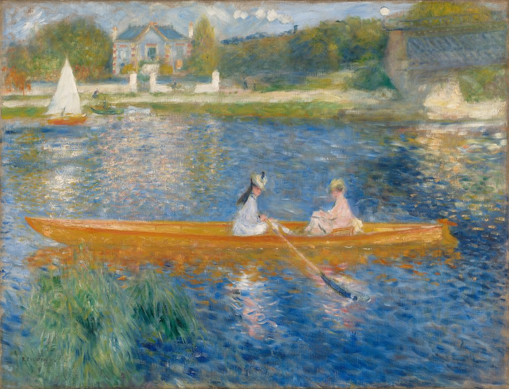

小船 The Skiff (La Yole)
雷诺阿 · 1875年 · 伦敦国家美术馆
Pierre-Auguste Renoir · 1875 · The National Gallery, London
图片：Wikimedia Commons，公有领域 / Image: Wikimedia Commons, public domain

发现 · Discover
橙色和蓝色 Orange and blue
雷诺阿把鲜橙色的小船，放在深蓝色的河水上。这两种颜色放在一起，彼此都会显得更强烈。
Renoir placed the bright orange boat against the deep blue water. Side by side, each colour looks more intense.
互补色 Complementary colours
法国化学家谢弗勒尔在1839年提出，蓝色和橙色是互补色。19世纪的新科学，鼓励印象派画家去尝试这样的颜色组合。
In 1839, the French chemist Michel-Eugène Chevreul showed that blue and orange are complementary colours. New science like this encouraged the Impressionists to experiment.
两位女子 Two women
小船上坐着两位穿着时髦的女子，一位划着船。
Two fashionably dressed women sit in the skiff; one of them is rowing.
帆船 The sailboat
那条帆船的白帆，平衡了整个画面；它的船身颜色，也和小船呼应。
The white sail of the sailboat balances the picture, and its hull echoes the colour of the skiff.
远处的火车 The train
远处有一列冒着烟的蒸汽火车开过。这是印象派画家很喜欢放进画里的现代生活。
In the distance, a steam train passes, a touch of modern life the Impressionists loved to include.
船的颜色 The boat's colours
国家美术馆的研究发现，船身用的是铬黄和柠檬黄，船的轮廓用的是铬橙。
Research at the National Gallery found that the boat is painted in chrome yellow and lemon yellow, outlined in chrome orange.
故事 · The story
ACT I 第一幕 · 塞纳河上的夏天 Summer on the Seine
19世纪70年代，雷诺阿画了好几幅塞纳河上的划船场景。这一幅很可能画的是巴黎西边的沙图，但具体是哪里，至今还没有确定。
In the 1870s, Renoir painted several boating scenes on the Seine. This one probably shows the river at Chatou, west of Paris, though the exact spot has never been identified.
1875年 · 伦敦国家美术馆 / 1875 · The National Gallery, London
ACT II 第二幕 · 科学和颜色 Science and colour
19世纪的科学发现，深刻影响了画家。雷诺阿在这里大胆地把互补色放在一起：橙色的小船，蓝色的河。
The scientific discoveries of the 19th century had a deep influence on painters. Here Renoir boldly places complementary colours side by side: an orange boat on a blue river.
1875年 · 伦敦国家美术馆 / 1875 · The National Gallery, London
ACT III 第三幕 · 来到伦敦 To London
1982年，伦敦国家美术馆买下了这幅画。
In 1982, the National Gallery in London bought this painting.
1875年 · 伦敦国家美术馆 / 1875 · The National Gallery, London
橙色的船，蓝色的河，一个夏天。 An orange boat, a blue river, one summer.
作品档案 · Artwork record
| 画家（生卒年） · Artist (dates) | 皮埃尔-奥古斯特·雷诺阿（1841–1919） / Pierre-Auguste Renoir (1841–1919) |
|---|---|
| 画名 · Title | 小船 / The Skiff (La Yole) |
| 年份 · Date | 1875年 / 1875 |
| 材质 · Medium | 布面油画 / Oil on canvas |
| 尺寸 · Dimensions | 71 × 92 cm |
| 收藏地 · Collection | 伦敦国家美术馆 / The National Gallery, London |
| 来源说明 · Credit line | 1982年购入（编号 NG6478） / Bought, 1982 (NG6478) |
关于画家 · About the artist
皮埃尔-奥古斯特·雷诺阿（1841–1919），法国画家。他和莫奈在学画时就是好友，是印象派的核心人物之一。19世纪80年代，他开始离开印象派，转向古典艺术。
Pierre-Auguste Renoir (1841–1919) was a French painter. He and Monet became friends as students, and he was one of the leading Impressionists. In the 1880s he began to move away from Impressionism towards classical art.
更多雷诺阿的画 · More by Pierre-Auguste Renoir